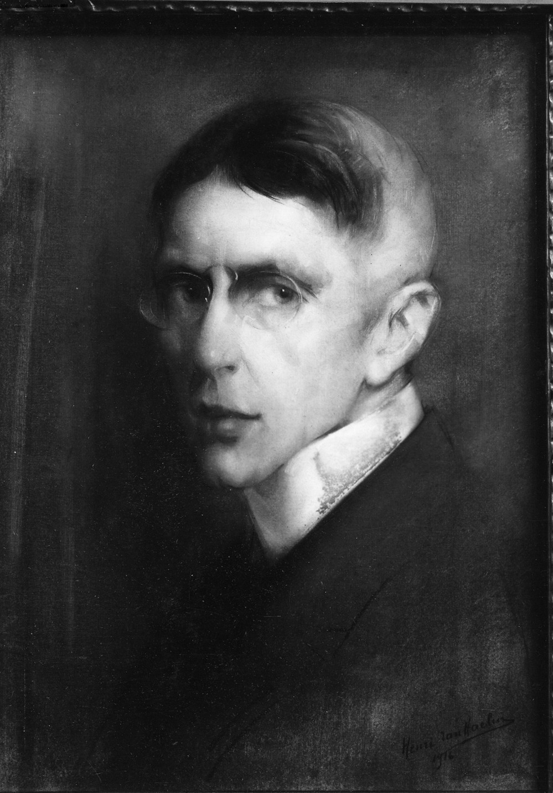

**Henri Van Haelen**
*Portrait de Monsieur Brand Whitlock*
MRBAB, inv. 4146
Comme pour le portrait de M. Verstraeten, les causes exactes des dommages subis par ce dessin d'Henri Van Haelen demeurent inconnues. Van Haelen réalisa ce portrait en 1916 comme une **étude préparatoire** remarquablement détaillée, au pastel, en vue d'une œuvre peinte de plus grand format. Le modèle est Joseph Brand Whitlock (1869-1934), ministre des États-Unis en Belgique à partir de 1913, puis ambassadeur américain entre 1919 et 1921.
Photographie du peintre Henri Van Haelen dans son atelier, vers 1916
En 1919, trois ans après son exécution, l'œuvre fut acquise par les Musées royaux des Beaux-Arts de Belgique. En 1934, comme cela se faisait fréquemment, elle fut **déposée hors les murs**. Ce portrait rejoignit alors la résidence officielle du ministre Frans Van Cauwelaert (1880-1961), où il demeura en tout dix-sept ans, avant d'être rendu au musée en 1951, endommagé. Qu'a-t-il bien pu se produire durant cette période ? Cela reste un mystère. Mais contrairement au portrait de Wollès, nous possédons une photographie de ce dessin dans son **état d'origine**, qui nous permet d'évaluer avec précision l'ampleur des dégâts. Des taches dues à des infiltrations d'eau sont nettement visibles et ont emporté une partie de la couche de pastel (les lunettes, notamment, ont presque entièrement disparu). Les bords irréguliers de l'œuvre révèlent en outre une perte partielle du support.

Photographie historique du Portrait de Monsieur Brand Whitlock d'Henri Van Haelen
Si l'état dégradé de l'œuvre est regrettable, il offre néanmoins un aperçu unique de la technique de Van Haelen. On observe en effet qu'il réalisa d'abord son dessin sur papier avant de le monter sur un support secondaire, en l'occurrence une toile. Ce portrait endommagé demeure un témoignage fascinant, à la fois de la virtuosité artistique de Van Haelen et d'une histoire tumultueuse, en partie méconnue.
*Crédits photos : © MRBAB, Bruxelles / photo : J. Geleyns - Art Photography*
**Henri Van Haelen**
*Portret van de Heer Brand Whitlock*
KMSKB, inv. 4146
Net als bij het portret van de heer Verstraeten, is het exacte verhaal achter de schade aan deze tekening van Henri Van Haelen onbekend. Van Haelen tekende dit portret in 1916 als een opmerkelijk gedetailleerde **voorbereidende studie** in pastel voor een groter, geschilderd werk. Het model is Joseph Brand Whitlock (1869 – 1934), die vanaf 1913 als Amerikaans minister en van 1919 tot 1921 als Amerikaans ambassadeur in België was.
Fotografie van kunstschilder Henri Van Haelen in zijn atelier, ca. 1916
Drie jaar nadat Van Haelen dit portret tekende, in 1919, werd het werk aangekocht door de Koninklijke Musea voor Schone Kunsten van België. In 1934 werd het, zoals wel vaker gebeurde, **in depot** geplaatst buiten de museummuren. Dit werk vond een plaats in de officiële residentie van minister Frans Van Cauwelaert (1880-1961). Daar bleef het maar liefst zeventien jaar, tot het in 1951 beschadigd terugkeerde. Wat er in die periode precies is gebeurd, blijft een raadsel. In tegenstelling tot het portret door Wollès, bezitten we van dit werk een foto van de **originele staat**. Hierdoor kunnen we de opgelopen schade nauwkeurig reconstrueren. Duidelijk zichtbaar zijn vlekken veroorzaakt door waterschade, die een deel van de pasteltekening hebben weggewassen (heel opvallend is de bril die bijna volledig verdwenen is). De oneven randen tonen bovendien aan dat een deel van de originele drager verloren is gegaan.
Historische foto van Henri Van Haelens Portret van de Heer Brand Whitlock
Ondanks de beschadigingen biedt het werk ons vandaag een unieke inkijk in de techniek van de kunstenaar. Door de schade is duidelijk te zien dat Van Haelen de tekening op papier uitvoerde dat vervolgens op een tweede drager, in dit geval doek, werd aangebracht. Het gehavende portret blijft een boeiende getuige van zowel artistiek vakmanschap als een bewogen, deels onbekende geschiedenis.
*Fotocredits: © KMSKB, Brussel / foto: J. Geleyns - Art Photography*
**Henri Van Haelen**
*Portrait of Mr Brand Whitlock*
RMFAB, inv. 4146
As with the portrait of Mr Verstraeten, the exact story behind the damage to this drawing by Henri Van Haelen is unknown. Van Haelen drew this portrait in 1916 as a remarkably detailed **preparatory study in pastel** for a larger, painted work. The sitter is Joseph Brand Whitlock (1869–1934), who was the American Minister to Belgium from 1913 and the American Ambassador from 1919 to 1921.
Photograph of painter Henri Van Haelen in his studio, ca. 1916
In 1919, three years after Van Haelen drew this portrait, the work was acquired by the Royal Museums of Fine Arts of Belgium. In 1934, as was often the case, it was **placed in deposit** outside the museum walls. This work found a home in the ministerial residence of Frans Van Cauwelaert (1880-1961). It remained there for no less than seventeen years, until it was returned, damaged, in 1951. What exactly happened during that period remains a mystery. Unlike the portrait by Wollès, we have a photograph of this drawing in its **original condition**. This allows us to accurately assess the damage it has sustained. Stains caused by water damage are clearly visible, which have washed away part of the pastel drawing (most strikingly, the spectacles have almost completely disappeared). The uneven edges also show that part of the original support has been lost.
Historical photo of Henri Van Haelen's Portrait of Mr Brand Whitlock
While the work's current degraded condition is unfortunate, it also offers a unique insight into Van Haelen's technique, revealing that he first executed his drawing on paper then mounted it on a secondary support, namely canvas. This damaged portrait remains a fascinating testament to both artistic craftsmanship and a turbulent, partly unknown history.
*Photo credits: © RMFAB, Brussels / photo: J. Geleyns - Art Photography*